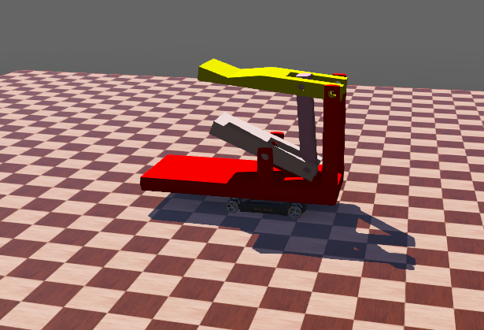

Exam3 <<
Previous Next >> Brython
Final
期末協同專案執行過程影片、簡報與 PDf 報告檔案 (六人一組) (30%)
題目: Webots 動態投籃模擬系統的協同設計
說明:
籃框架被配置在一定範圍內, 可隨機慢速前進、後退及左右擺動, 投籃機構系統帶有一定數量的籃球, 被配置在可自由移動的輪車上.
操作者可利用鍵盤特定按鍵控制投籃輪車的移動並發射投籃, 每投出一球後系統透過記分板進行計分, 並由送球機構進行補球或移動輪車取球, 遊戲可進行至全部數量籃球投完為止.
搭載式底座車輛的建模:

Robot {
children [
Robot { // <-- 這裡嵌套了一個子機器人，裡面才是重點！
...
}
]
}
外層Robot是一個總控制單位
內層的Robot投籃機構、馬達等
Solid {
name "base"
geometry Mesh {
url [ "models/base.obj" ]
}
為車子的主體底座，零件都要接在此平台上
HingeJoint {
jointParameters HingeJointParameters {
position 0.0031144628241826593
axis 0 0 1
anchor 0.15 0.68 0
}
中間使用許多的HingeJoint來進行結構接，使其能夠作動
實體模型都是使用.obj檔
組裝在不同的 Solid 節點中，並透過 HingeJoint + RotationalMotor 控制動作。
車子主體使用外層Robot+best製作
籃球基本體是用內層Robot+HingeJoint+ Mesh製作
所有結構都建立在 Robot 內部的 children 中，不同的部位靠著正確的 anchor、translation 和 HingeJoint 組合成一個整體，所有部位最後都繫在 base 上，所以整體能跟著車子移動。
檔案位置:/downloads/final project.7z
心得:這學期學習的很多東西都是以往沒使用過的，老師教導的東西還滿有深度的，所以剛開始製作時哪哪都看不懂，靠著chatGPT+看影片一步一步慢慢學習，期中過後的內容更加困難些，我會主動詢問成績更加優秀的同學，努力跟上進度，盡量將老師給的題目做好，整個圍繞著運用Webots來控制實體，我學習到很多新事物，可並不熟悉，還在慢慢摸索。
請將期末協同專案執行過程、內容與心得, 製作成影片，配合字幕上傳至 Youtube 後嵌入各階段的期末報告頁面中.
影片標題: 國立虎尾科技大學 - 機械設計工程系 - cd2025 期末報告 - 學員學號 - 各階段影片主題
Exam3 <<
Previous Next >> Brython